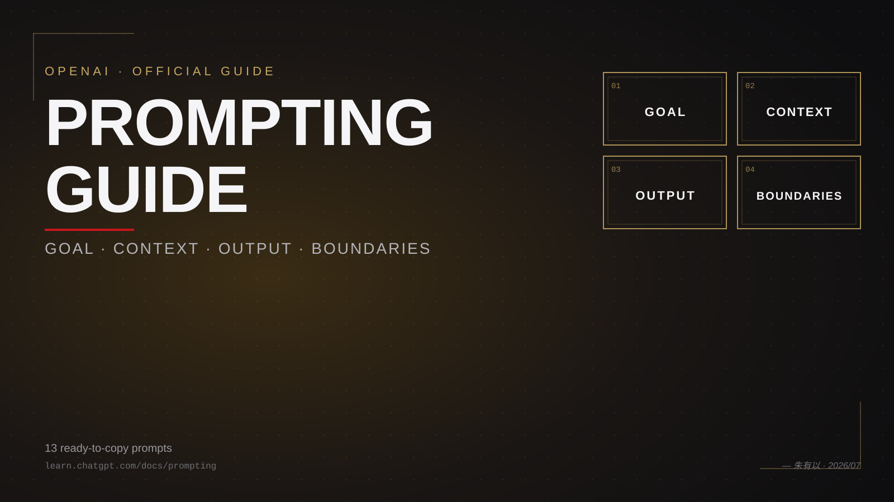
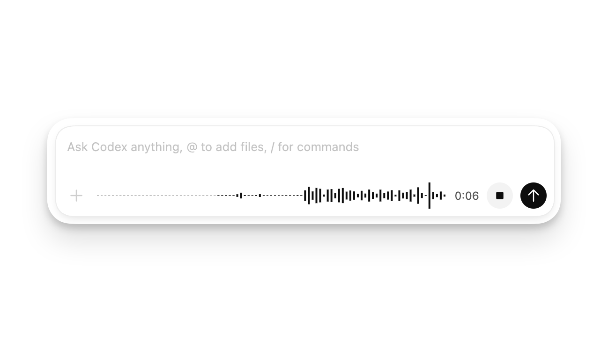
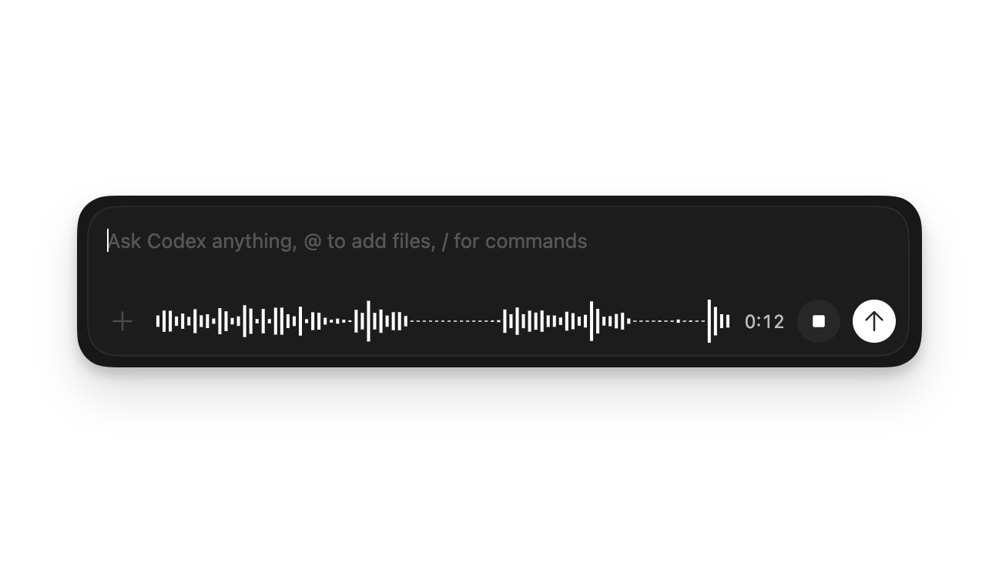

OpenAI 官方 Prompting 指南
四要素框架 + 13 个复制即用 prompt
OpenAI 这次没讲 prompt 技巧，讲的是「怎么管理 prompt 的边界」——Goal + Context + Output + Boundaries 四要素框架，ChatGPT / Work / Codex 三个产品通用。原文 13 个例子全部做成双语卡片（中英切换 + 一键复制），按场景穿插在正文里。

2026 年，OpenAI 自己出了一份 Prompting 官方指南。
但这次，OpenAI 没讲 prompt 技巧——它讲的是四要素框架。
读完之后你会发现：所谓"好的 prompt"，本质上就是把这四件事说清楚——Goal、Context、Output、Boundaries。剩下的 follow-up、迭代、跨产品（Chat/Work/Codex）落地，都是这个框架的延伸。
下面我把这份指南翻译、拆解、再加上我自己的解读。13 个官方示例全部做成双语卡片——EN 是 OpenAI 原文，CN 是按中文工作场景重写的中文意译（不直译，去机翻味），两者都能直接复制粘贴。


四要素框架
OpenAI 把所有好 prompt 的共性压成了这四个要素。不用每个 prompt 都填满，挑有用的说就行。
一句话：先说 Goal，再补 Context，再讲 Output，最后用 Boundaries 兜底
OpenAI 的原话：
A short prompt is often enough. For larger or more important tasks, include the parts that matter: Goal — What should ChatGPT do? Context — What information or sources will help? Output — What format, length, or level of detail do you need? Boundaries — What must stay unchanged? What should ChatGPT avoid or check with you before it acts?
中文直译：短的 prompt 经常就够了。但任务大或重要时，把下面四块填上——目标、上下文、输出、边界。
第一个例子：用"Goal + Output"讲清楚一个概念
这是个 Chat 场景下"解释一个概念"的 prompt。你会发现：哪怕只写了 Goal 和 Output，效果就比"跟我讲讲复利"好得多。
看 EN 原文——只有两句话：
- Goal：Explain how compound interest works
- Output：for someone who has never invested · Use one concrete example · define any financial terms
没有 Context（不需要文件、不需要联网），没有 Boundaries（不涉及敏感操作）。但 Goal + Output 写清楚后，结果已经好过 90% 的"跟我讲讲 X"了。
让结果"能用"
四要素框架拆开看，每个要素都有具体的写法。下面是三个实战：起草一段文字、对比选项、设置边界。
2.1 先讲结果，再讲步骤
OpenAI 反复强调的一点：从结果开始，而不是从步骤开始。告诉 ChatGPT 你要什么（Goal + Output），把过程留给它自己找。
EN 原文结构：
- Goal：Draft a friendly email declining this invitation
- Context：because I will be traveling（一个原因就够）
- Output：under 120 words · leave the door open for a future event
没有列步骤（不要写"第一步问候，第二步解释，第三步结尾"），只讲结果。ChatGPT 会自己找最合适的表达方式。
2.2 对比 + 表格 + 推荐——把"判断"也写在 prompt 里
要 ChatGPT 帮你做决定，不要只问"哪个好"。把判断标准也写进去——格式、权衡、推荐动作。
EN 原文拆解：
- Goal：Compare these two phone plans
- Context：for one person who travels internationally twice a year
- Output：Show the important differences in a table · recommend one · explain the tradeoff
注意 Output 的写法——不是"给我一份对比"，而是"表格 + 推荐 + 解释权衡"。你想要的"判断动作"都明示了。
2.3 Boundaries——最重要的、也最容易被忽略的一块
OpenAI 对 Boundaries 的定义：边界是那几条让 ChatGPT 别做出格动作的指令。需要的时候才加，不是什么时候都要写。
原文给的四个典型 Boundary：
- Keep the approved dates and budget figures unchanged.（日期和预算不要改）
- Use only the supplied sources. Flag missing information instead of guessing.（只用提供的资料，缺了标出来，不要瞎猜）
- Keep recommendations within the stated budget.（推荐要在预算范围内）
- Prepare the message as a draft. Don't send it.（先做草稿，别发）
原则：只写那 1-2 个真重要的边界。你不需要控制 ChatGPT 的每一步。
进阶：多轮对话
第一条 prompt 不用完美。先发，再根据结果改——这是 OpenAI 反复强调的迭代思路。
3.1 你的第一条 prompt 不用完美
原文原话：
Your first prompt doesn't need to be perfect. Review the result, then ask for the specific change you want.
中文：你第一条 prompt 不用写得完美。先发，看结果，再追问具体的修改。
一个"补一句"的范例：
可以加缺失的资料、纠正方向、要别的选项、调整详细程度——都不需要重头来过。
3.2 Steering 和 Queuing——Codex 时代的两个新动作
当 Codex 已经在跑时，你可以再发一条消息，不用等当前任务跑完：
- Steer（介入）：把消息塞进当前这轮。用来改方向、补漏、提供新信息。
- Queue（排队）：把消息存到下一轮。用来做"等这个跑完再做"的跟进。
桌面端默认行为在 Settings > General > Follow-up behavior 里改。Codex CLI 里：Enter 介入当前轮，Tab 排队到下一轮。
3.3 一个多约束的"实战 prompt"
下面这个例子同时塞了四要素——Goal、Context、Output、Boundaries 全都到位了。注意它是怎么处理多轮迭代的暗示："做完之前自己检查"。
EN 原文拆解：
- Goal：Plan five weekday dinners
- Context：less than 30 minutes（隐含的时间约束）
- Output：5 道菜 + 食材步骤 + 一张合并购物清单
- Boundaries：Avoid peanuts（唯一明确写出的边界）
"reuse ingredients across meals" 是 Output 里隐含的优化目标——它没有写成 Boundary（"必须重用"），而是作为 Output 的偏好，让 ChatGPT 自由发挥。
跨产品落地
同一套四要素框架，在 Chat、Work、Codex 三个产品上的不同写法。下面 9 个例子按场景分组。
4.1 Chat——轻量问答场景
已经在前面看到 4 个 Chat 场景了：解释概念、起草文字、对比选项、做计划。它们都不需要文件、不需要工具，Goal + Output 写清楚就够。
4.2 Work——多源、多步骤、要交成品
Work 适合时间长的、需要多种来源或工具、要按顺序执行的任务——比如把三份季报提炼成董事会一页纸。
5. 把素材变成成品文件
EN 原文拆解：
- Goal：create a leadership brief and a six-slide presentation
- Context：Use the attached quarterly reports · audience is the executive team
- Output：lead with three decisions · distinguish facts from analysis · cite numbers to source files · check that brief and slides agree
- Boundaries：（隐含）不能瞎编数字；要做完自己核对
6. 调研一个决策
EN 原文拆解：
- Goal：Research three customer-support platforms
- Context：for a 50-person company · using current sources
- Output：Compare pricing · security · integrations · migration effort · recommendation memo with links and assumptions
- Boundaries：use current sources（隐含的"不要用过期资料"）
7. 协调一次发布
EN 原文拆解：
- Goal：Create a launch plan
- Context：attached product brief
- Output：timeline · owners · dependencies · risks · announcement draft · customer FAQ · checklist for launch day
- Boundaries：Flag any missing decisions before producing the final files
8. 综合示例：一页纸项目状态
这是官方给的"四要素齐全"的范例——Goal + Context + Output + Boundaries 全部明示，是整份指南最有代表性的一张卡片。
EN 原文拆解：
- Goal：Prepare a one-page project status update for Monday's leadership meeting
- Context：Use the latest project plan in Drive · relevant decisions and updates from the project's Slack channel
- Output：Lead with the decisions · next steps · summarize progress · risks · owners · due dates
- Boundaries：Keep approved dates and budget figures unchanged · don't send or publish anything
- Final check：Before you finish, check that every next step has an owner and due date
最后一句 "Before you finish, check that..." 是 OpenAI 反复用的句式——把"自检动作"写进 prompt 里，让 ChatGPT 在交活之前自己跑一遍检查。
4.3 Codex——开发者工作流
Codex 的 prompt 比 Chat/Work 复杂一些：它要涉及文件路径、CLI 命令、IDE 选区、复现步骤。下面 5 个例子是开发者最常用的场景。
Codex 的 IDE 插件会自动把当前打开的文件作为上下文；CLI 里则需要用 @path 或者 /mention 显式附加文件。
9. 解释一段代码（IDE）
EN 原文拆解：
- Goal：Explain how the request flows through the selected code
- Context：（IDE 自动带入）选中的代码 + 当前打开的文件
- Output：responsibilities of each module · what data is validated and where · 1-2 "gotchas"
10. 修一个 bug（CLI）
这是个典型的"bug 报告模板"——复现步骤 + 约束 + 期望动作 全部写清楚。
EN 原文拆解：
- Goal：Fix the bug causing "Saved" to show without persisting changes
- Context：完整复现步骤（npm run dev → /settings → toggle → Save → refresh）
- Output：Find the bug · propose a fix · tell me how to verify it
- Boundaries：Do not change the API shape · Keep the fix minimal · add a regression test if feasible
- Final check：Start by reproducing the bug locally, then propose a patch and run checks
11. 写一个测试（IDE）
最短的一张 Codex 卡片——但已经够用。IDE 自动带入选中的函数，Output 写明"按仓库已有约定"。
12. 看截图起原型（CLI）
Codex CLI 支持直接拖图片进终端作为输入。这个例子把"视觉要求"和"实现约束"分开写——图片管视觉，文字管技术栈。
EN 原文拆解：
- Goal：Create a new dashboard based on this image
- Context：（图片提供视觉）
- Output：Match spacing · typography · layout as closely as possible · new route · small components · README.md with run instructions
- Boundaries：Use react · vite · tailwind · TypeScript
图片无法表达的状态（hover、校验、键盘交互），要靠文字补——这是 OpenAI 反复强调的"视觉 ≠ 全部需求"。
13. 边改边看的 UI 迭代（CLI）
Codex 的特点是能跑 dev server 然后给你实时改。每轮迭代聚焦一个小改动，不要堆需求。
EN 原文拆解：
- Goal：Propose 2-3 styling improvements for the landing page
- Context：（CLI 自动看到代码）
- Output：3 个可选方向，让用户挑
接下来的迭代都是"小步快跑"——选一个方向 → 缩小范围 → 改 → 看效果 → 再缩小。原文给了一个完整迭代节奏：
- 选方向（Go with option 2）
- 缩小范围（only the header · make typography more editorial · increase whitespace · looks good on mobile）
- 下一轮（reduce visual noise · keep layout · simplify colors · remove redundant borders）
- 循环
我的解读
5.1 OpenAI 在引导你"管理 prompt 的边界"，而不是"写好 prompt 的技巧"
这是这份指南最反直觉的一点。
如果你期待的是"10 个 prompt 技巧"、"高级 prompt 写法"、"few-shot 教程"——你会失望。OpenAI 这次完全没有讲这些。
它讲的是：不要试图控制 ChatGPT 的每一步。只要把四件事说清楚（Goal + Context + Output + Boundaries），剩下的过程让它自己决定。
这是一个范式转换——从"我写 prompt 技巧"到"我和 AI 协作时怎么定边界"。
5.2 四要素里，Boundaries 是真正的护城河
很多人写 prompt 都堆在 Goal 和 Output 上——"给我写一篇文章，要 1000 字，要三个小标题"。但 Boundaries 才是让 AI 输出变得可用的关键。
OpenAI 给的四个典型 Boundary 都很朴素：
- 日期和预算不要改
- 只用提供的资料，缺了标出来
- 推荐要在预算范围内
- 先做草稿，别发
它们看起来都是"废话"，但每一个都是上一次"AI 帮倒忙"换来的教训。Boundaries 不是 prompt 技巧，是事故复盘。
5.3 "做完之前自己检查"——这句要抄下来
整份指南里出现频率最高的一个句式是：
Before you finish, check that every [thing] has [property].
翻译："做完之前自己检查一遍，每个 [东西] 都要有 [属性]。"
在 prompt 末尾加一句自检指令——比"写好一点"、"仔细一点"管用一百倍。因为它把"仔细"这个抽象词变成了具体的检查清单。
下次写 prompt 的时候，最后一句加上："Before you finish, check that..." 试试。
5.4 对中文用户的额外提醒
官方例子里有几个英文习惯，放到中文场景里要替换掉：
lead with X→ "开头先讲 X"、"把 X 放最前面"flag→ "标出来"、"提示一下"、"提醒一句"cite X to Y→ "标注 X 出处为 Y"before you finish, check that...→ "做完之前检查一遍..."
直接用中文 prompt 也行，但把英文短语当模板套用更稳——英文社区已经把句式打磨过了。
5.5 一句话带走
好的 prompt = Goal + Context + Output + Boundaries 四件事说清楚。
剩下交给 AI 自己找路径。
A good prompt is just four things said clearly. Leave the rest to the model.
上面 13 张卡片覆盖了 Chat / Work / Codex 三种典型场景。建议先挑 3 张你日常会用到的场景复制下来——比如"起草邮件"、"做计划"、"修 bug"——存到你的 prompt 模板库。一个月后回来补剩下的。
SOURCES & CREDITS
引用与原文出处
-
ORIGINAL ARTICLE
Prompting — Write useful prompts for Chat, ChatGPT Work, and Codex
文档：OpenAI Developers（learn.chatgpt.com/docs） · 2026 年新版官方 prompting 指南
原文链接：https://learn.chatgpt.com/docs/prompting -
RELATED · PROMPTING GUIDE
Prompt engineering（API 端开发者向深度指南）
Prompting overview（API 文档对应入口）
Citation formatting（引用格式化）
Migration guide（旧 prompt object 迁移） -
RELATED · CODEX DOCS
Codex · Prompting · Codex 自己的 prompting 入口
Codex · Quickstart · Codex 快速上手
Codex · Skills & Plugins · Skills 与 Plugins（卡片 6/13 涉及）
Codex · Projects · 项目共享文件/源（卡片 8 涉及）
Codex · Web search · 网页搜索（卡片 6/8 涉及）
Codex · Work with files · 文件审阅（卡片 5 涉及）
Codex · Image inputs · 图像输入（卡片 12 涉及）
Codex · App settings · 个性化/Follow-up 行为设置（§3.2 涉及）
Codex · CLI interactive shortcuts · Enter/Tab 介入/排队（§3.2 涉及）
Codex · Sandboxing · 沙箱与权限（卡片 10 涉及）
Codex · Slash commands · /plan /goal 等命令（卡片 9 涉及）
Codex · GitHub integration · @codex review（卡片 13 涉及）
Codex · Long-running work · Goal mode（卡片 9 涉及）
Codex · Automations · 周期性任务（§3.2 涉及）
Codex · Cloud internet access · 云端网络访问（卡片 9 涉及）
Codex · Personalize ChatGPT · 个性化设置（§3 涉及）
Codex · Permission modes · 权限模式 -
RELATED · OPENAI DEVELOPERS
https://developers.openai.com/ · OpenAI 开发者主站
https://learn.chatgpt.com/docs · ChatGPT Learn 文档根目录
https://openai.com/academy/prompting · OpenAI Academy "Prompting fundamentals"（三步法简版） -
IMAGE SOURCES
voice-dictation-light.webp · 引子段浅色主题图
voice-dictation-dark.webp · 引子段深色主题图
封面图（cover.svg）为本站自绘，呼应四要素框架的视觉表达，非 OpenAI 原文素材。 - INTERPRETATION 本文为 OpenAI 官方 prompting 指南的中文解读版，按中文阅读习惯重新编排。原文中所有 13 个 example prompt 均保留英文原貌，便于直接复制使用；中文版为意译，便于理解。如需引用请以原文为准。OpenAI 原文处于持续更新状态，本文解读基于 2026/07/12 抓取版本。
四要素框架（Goal + Context + Output + Boundaries）不只适用于 ChatGPT，也适用于 Work 和 Codex——这就是这份指南最值得带走的地方。挑 3 张最贴你日常场景的卡片存起来，比收藏整篇文章更实用。